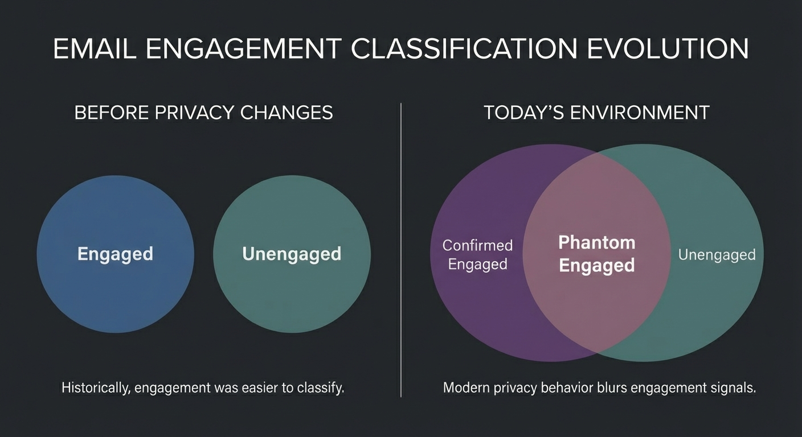

Your Customized Report and Action Steps
The Visible
What you can measure
The Invisible
?
Confirmed Engaged
?
Phantom Engaged
Unengaged
The blind spot
1 blind spot that creates 2 problems.
You're treating bots as fans. And some of your biggest fans as dead
weight.
Don't worry. We have answers.
Your Re-Engagement Snapshot
You're sending to subscribers. You've identified roughly of them, about %
of
your audience, as showing no meaningful engagement signals. That leaves that you're currently treating as engaged.
That second number deserves scrutiny. It's almost certainly too high, and the framework below
will show you exactly why.
Since you said you haven't run a formal re-engagement campaign, those subscribers may have been accumulating silently. And
without this new structured re-engagement process in place, you have no mechanism for
determining
how many of the remaining are actually engaged
versus simply appearing that way. Every send that reaches an
unresponsive inbox without a plan behind it is a data point ISPs use against you (especially
Google, and we all know how important Gmail inboxing is).
You've recently attempted re-engagement, which means you already know this is a problem. The
question is whether the approach accounted for the subscribers hiding between your
“engaged” and “unengaged” segments. The ones your ESP shows as
active but whose engagement can't actually be verified.
You ran a re-engagement effort within the last 90 days. If it didn't move the needle the way
you expected, the framework below will show you a likely reason: most re-engagement
campaigns treat the list as two groups, engaged and unengaged, when there are actually
three. The invisible middle group is where campaigns quietly fail.
Your last re-engagement attempt was long enough ago that the landscape has changed underneath
you. Privacy protections like Apple's Mail Privacy Protection have fundamentally altered
what “engagement” even means. Subscribers your ESP reported as
“engaged” the last time you ran this exercise may no longer be provably engaged
today.
You've indicated that your deliverability is currently healthy, which is exactly why now is
the time to address
this. Sorting out your identified unengaged
subscribers and determining the true engagement status of the remaining while your reputation is strong is dramatically
easier than doing it after ISPs start throttling you.
You're already seeing inconsistencies in your deliverability. With % of your list identified as unengaged, and an unknown
additional portion whose “engagement” may be phantom signals from privacy
proxies, there's a direct line between that uncertainty and the inbox placement issues
you're noticing.
Your deliverability has recently declined, and the problem may be bigger than the subscribers you've identified. ISPs interpret
continued sending to unresponsive addresses as a lack of list hygiene, and if a portion of
your remaining subscribers are phantom engaged
rather than actually active, you're sending to more unresponsive addresses than you
realize. That impacts inbox placement for everyone on your list, including the subscribers
you can prove are reading.
You're not sure about your deliverability health, and that uncertainty is itself a risk
factor. With % of your list identified as unengaged,
and no way to know how many of the remaining are
actually active versus phantom engaged, there's a meaningful chance your inbox placement is
already being affected and you don't have visibility into it.
The framework below breaks your list into three categories, not the two
you're used to, and gives you the exact protocol for handling each one without damaging your
sender reputation in the process. It starts with a concept most email marketers have never
encountered.
Want the step-by-step version? The Deliverability Safety Checklist covers every
risk factor
surfaced in this report: authentication gaps, reputation monitoring, list hygiene protocols,
and the specific sending practices that protect your inbox placement while you sort this out.
It's free.
Get
the Safety Checklist →
Engagement In The Modern Era
Engagement classification has fundamentally changed. Open rates are no longer a reliable proxy
for human interest due to privacy protections like Apple's MPP.
In this environment, aggressive re-engagement can damage domain reputation.
We adhere to a conservative, signal-first approach to protect list health while attempting to
recover value.
This goal is long term stability, not short term volume.
Why this matters for your list: The instinct is to treat your list as 2 groups,
engaged and unengaged. Both your ESP and your gut reinforce that view. But it's wrong.
You entered total and unengaged, which means you're treating the remaining
as engaged. But a significant portion of that
group
is 100% Phantom Engaged: subscribers whose “opens” are generated by
privacy proxies,
not human behavior.
The actual number of confirmed engaged subscribers on your list is likely
lower than , and you won't know by how much until you
apply the observation window below.
This framework splits your list into 3 buckets, not 2. The middle bucket, Phantom
Engaged, is the one most email marketers have never considered. It's also the one that
determines whether your re-engagement effort helps or hurts. Here, let me show you what I mean:
The 3 Subscriber Buckets
Bucket A: Confirmed Engaged
Subscribers showing verified human intent such as clicks, replies,
or
purchases. Opens are optional, but Bucket A requires undeniable human interaction.
Bucket B: Phantom Engaged
Subscribers showing opens without other human intent. These signals may be human or
automated. This bucket represents uncertainty, not behavior.
Bucket C: Unengaged
Subscribers showing no engagement signals whatsoever, not even opens, within a
defined
observation window.
These subscribers require controlled, finite re-engagement.

Now that you can see all three categories, here's the good news: each one has a clear
protocol. Bucket A takes care of itself. Bucket B and C are where this framework gives you
the clarity you've never had before. Let's walk through exactly what to do.
This is the bucket that matters most for your situation. You're tracking opens but not
clicks, replies, or purchases. That means right now, you have no reliable way to distinguish
between a subscriber who actually opened your email and one whose device auto-loaded
tracking pixels through Apple's Mail Privacy Protection or a corporate security filter.
Some portion of your “unengaged”
subscribers may actually be opening. They just don't have a click or reply to prove it. And
some portion of the you're treating as
“engaged” may not be engaged at all. Their “opens” are
machine-generated.
Without stronger signals, your -day observation window is
the only mechanism for beginning to sort this out. It won't give you certainty, but it gives
you a defensible classification.
But that doesn't eliminate Bucket B. Among the
subscribers you're treating as engaged, there are still those who show opens but have never
produced a verifiable signal. Those subscribers are phantom engaged until proven
otherwise. The -day observation window below is how you
make that determination.
Bucket B: Handling Phantom Engagement
Phantom Engaged subscribers (opens
onlyopens without provable intent) require a specific observation
window to determine
safety. Classification relies on sending frequency.
Your Observation Window:
-- Days
Reference:
Daily sending: classify after 45 days.
Weekly sending: classify after 60 days.
Monthly/Sporadic sending: classify after 90 days.
Action: Continue normal sending to this group during this window. If no
provable signal (click, reply, or purchase) appears after -- days, move to Bucket
C.
The observation window gives you a way to classify Phantom Engaged
subscribers over time. But it doesn't address the subscribers who are clearly unengaged, the
ones with no signals at all. That's Bucket C, and it's where the stakes are highest. The wrong
approach here doesn't just fail to recover subscribers. It actively damages your ability to
reach the ones who are still paying attention.
Here's where discipline protects your entire operation. With subscribers in your identified unengaged pool, the
temptation is to re-engage them all at once and “get it over with.” But if you send
to all simultaneously, that's a % spike in volume hitting addresses that haven't responded
to you in months. ISPs don't just penalize that batch. They throttle delivery to your entire
list, including your confirmed engaged subscribers, the ones you can actually prove are reading.
And remember: if your Phantom Engaged bucket is larger than you think, which, based on your
inputs, it likely is, then you're already sending to more unresponsive addresses than your ESP
is showing you. A mass re-engagement blast on top of that would compound the problem.
The controlled approach below keeps you under the radar.
Bucket C: Controlled Re-Engagement
We do not blast unengaged subscribers. We re-engage in controlled waves alongside normal
campaigns. Note: This volume threshold is reduced from older practices to account for modern
uncertainty.
Maximum Daily Re-Engagement Volume:
-- Subscribers / Day
This cap represents 5% of the you've
identified as unengaged.
Start with the warmest unengaged subscribers first.
So you know the daily volume. You know to start with the warmest subscribers
first. But there's one more rule that most re-engagement campaigns ignore, and ignoring it is
how well-intentioned cleanup efforts turn into reputation-damaging loops.
The Two-Send Limit
Re-engagement is finite. It does not repeat logic loops.
- Each unengaged subscriber receives exactly two re-engagement specific
emails.
- Exit Rule A (Success): Any click or reply immediately moves them to Bucket
A (Confirmed Engaged).
- Exit Rule B (Failure): If no action is taken after email #2, the subscriber
is permanently suppressed.
Hard Stop: Do not continue emailing subscribers who fail to convert after two
dedicated attempts. Re-engagement must not repeat indefinitely.
That's the complete framework. Three buckets, not two. Observation windows calibrated to your
sending frequency. Controlled daily volumes. A hard two-send limit with permanent suppression
for non-responders. Every piece is designed to protect your sender reputation while recovering
the subscribers who are actually recoverable.
The question now is execution.
This is a lot to implement manually. Classifying subscribers across three buckets (not two),
managing re-engagement sends per day, monitoring a -day observation window for your Phantom Engaged segment,
enforcing hard stops after two attempts. The framework is clear but the execution
across a list this size is operationally demanding. And getting it wrong doesn't just waste
time. It damages the deliverability you're trying to protect.
The 30 to 60 Day Re-Engagement Sprint handles all of it: three-bucket segmentation, phantom
engagement classification, send pacing, exit rules, monitoring, and suppression. Done by
hand by the same deliverability expert who created this tool.
Learn About the Sprint →
If your team doesn't have bandwidth for this: The framework above is
designed to be executed
in-house, but it requires consistent daily attention over weeks. Classifying across three
buckets, monitoring your Phantom Engaged segment through the full -day observation window, enforcing daily caps and hard
stops. The 30 to 60 Day Re-Engagement Sprint handles the full implementation. Done by hand
by the same deliverability expert who created this tool.
Learn About the Sprint →
⚠️ CAUTION: Stabilization Recommended First
You indicated --.
Prioritize stabilization before expansion.
- Reduce re-engagement velocity or pause entirely.
- Focus sending ONLY to Bucket A (Confirmed Engaged) for 2-4 weeks.
- Wait for deliverability metrics to stabilize before attempting further re-engagement.
What if this ran itself?
Everything you just read, three bucket classification, phantom engagement detection, controlled
re-engagement waves, observation windows, exit rules, permanent suppression. It's a framework
designed to be executed manually. It works. But it requires vigilance, discipline, and ongoing
attention that most teams can't sustain.
ReEngage Pro automates the entire process continuously, inside your existing ESP. It classifies.
It observes. It re-engages at safe volumes. It enforces hard stops. It adapts as your list
evolves.
It's not available yet. But when it launches, the businesses on the waitlist get first access and
early pricing.
Join the
ReEngage Pro Waitlist →